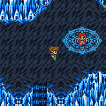
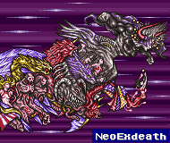

Story Line
(B)
การต่อสู้ครั้งสุดท้าย
Void
ภายใน Void ไม่สามารถใช้เวทย์ Exit ออกไปได้
อีกทั้งยังมีศัตรูแข็งแกร่งมากมาย เช่น
Necromancers ทำให้ตัวละครติดสถานะ Zombie
Thing (Crystelles) ดูดซับเวทย์หลายชนิด
K.Behemoth (BehemoKing) โจมตีรุนแรงมาก และยังใช้ Meteor ได้อีกด้วย
(ปราบได้โดยใช้ Odin)
Crystal
Dragons สามารถขโมยหอก Dragon Lances
จากมันได้ (เป็นหอกที่ดีที่สุดในเกม)
Mover หากปราบได้จะไดรับ ABP มากถึง 199 เลยทีเดียว
จากนั้นจะเจอ Gilgamesh อีกครั้ง

Boss : Gilgamesh

Level : 59
HP : 15,000
สามารถขโมยโล่ห์ Genji Shield
ซึ่งเป็นโล่ห์ที่ดีที่สุดในเกมจากมันได้
แต่เมื่อปราบมันได้ มันจะหนีไป
เดินผ่านจุดวาร์ปไปจะเจอหีบสมบัติหีบหนึ่ง
ภายในจะมีศัตรูสุดโหดอีกตัว คือ
Boss
: Shinryuu
Level : 97
HP : 55,000
Shinryuu มีพลังโจมตีที่รุนแรงมาก
คือสามารถใช้ Tidal Wave ซึ่งมีพลังโจมตีสูงถึง 7,000+ เลยทีเดียว
เพราะฉะนั้นหากยังไม่ได้เตรียมพร้อมมา ก็ไม่ควรเปิดหีบนี้
วิธีปราบ Shinryuu ต้องสวมใส่แหวน Coral Ring เพื่อดูดซับ Tidal
Wave
จากนั้นก็ระดมใช้เวทย์เสริมพลังต่างๆ ไม่ว่าจะเป็น Big Gurad, Golem
จากนั้นก็โจมตีตามอัธยาศัย แต่ต้องระวังเรื่อง HP ให้มากๆ
เมื่อปราบได้จะ สมบัติลับแห่งมังกร Dragon
Crest
และได้รับดาบ Ragnarok ซึ่งมีพลังโจมตีสูงที่สุดในเกม
(Att +140)
(หากไม่นับ Brave Blade เพราะมีพลังไม่แน่นอน)
เมื่อผ่านจุดวาร์ปอีกอัน จะเจอแสงสีเขียว
เมื่อเข้าไปสำรวจจะเจอกับลูกสมุนตัวสุดท้ายของ Exdeath
Boss : Necrofobia
Level : 66
HP : 44,044
Barrier
Level : ????
HP : 10,000
ซึ่งจะโจมตี Necrofobia ไม่ได้ เนื่องจาก Barrier ทั้ง 4 ทำให้
Necrofobia อยู่ในสภาพหายตัว
ต้องทำลาย Barrier ทั้ง 4 ให้พังก่อน จึงจะสามารถโจมตี Necrofobia
ได้
แต่เมื่อต่อสู้กับ Necrofobia ได้สักพัก
Gilgamesh ก็ปรากฏตัวขึ้นมา
โดย Gilgamesh ไม่ได้มาสู้กับพวก Butz แต่กลับไปสู้กับ Necrofobia
Gilgamesh เห็นถึงความพยายามของพวก Butz ทุกคน รวมทั้ง Galuf ด้วย
และ Gilgamesh ได้บอกความต้องการสุดท้ายของเขา คือ การต่อสู้กับ
Butz แบบตัวต่อตัว
จากนั้น Gilgamesh จึงได้ระเบิดตัวเองไปพร้อมๆ กับ Necrofobia
* Note : เมื่อ Gilgamesh ปรากฏตัวออกมา สามารถขโมยเกราะ
Genji Armor จากมันได้
เมื่อ Necrofobia ตาย จะปรากฎเป็น Save Point
จากนั้นเดินผ่านจุดวาร์ปอีกแห่งหนึ่ง จะพบกับ Exdeath
ซึ่งเขาได้รับพลังจาก Void ทำให้กลายร่างเป็น... ต้นไม้ (-_-")
และใช้พลังที่ได้มา ดูดพวก Butz หายไปในหลุมดำ
แต่นักรบแห่งแสงรุ่นเก่า ได้มาช่วยไว้ได้
Boss : Exdeath
Level : 77
HP : 49,001
เมื่อปราบได้ Exdeath จะเสียสูญ และถูกพลังจาก Void ดูดกลืน กลายร่างเป็น
Boss : Neo Exdeath

Top - Level : 81 - HP : 50,000
Right - Level : 67 - HP : 55,000
Center - Level : 83 - HP : 55,000
Left - Level : 86 - HP : 60,000
เมื่อปราบได้ จะพบกับฉากจบสุดแสนจะประทับใจยิ่งนัก